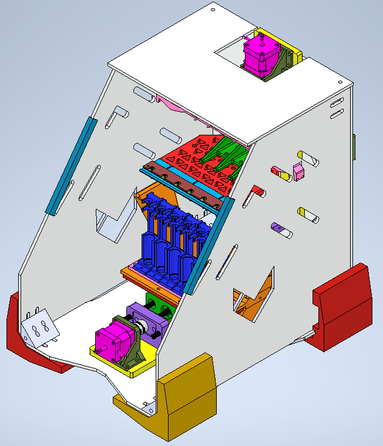
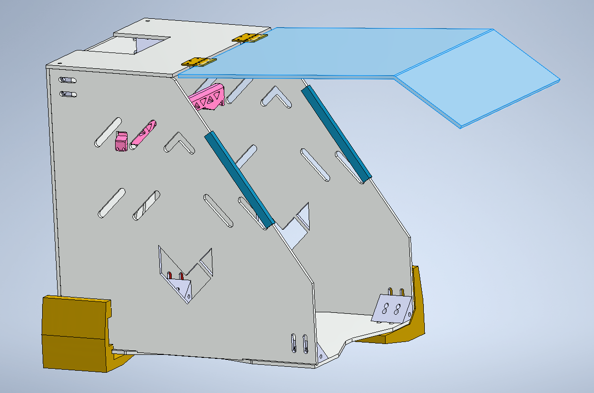
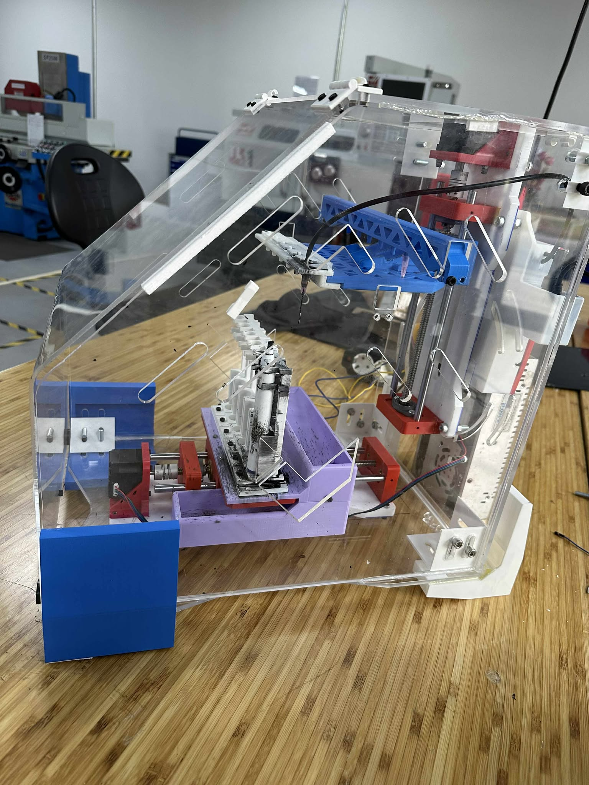
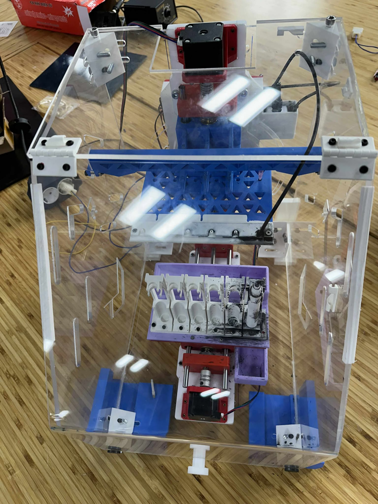
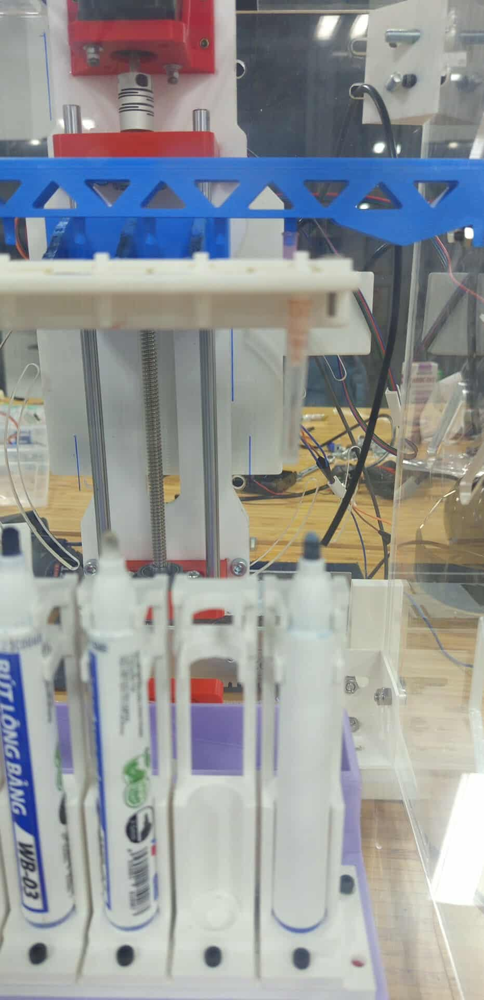
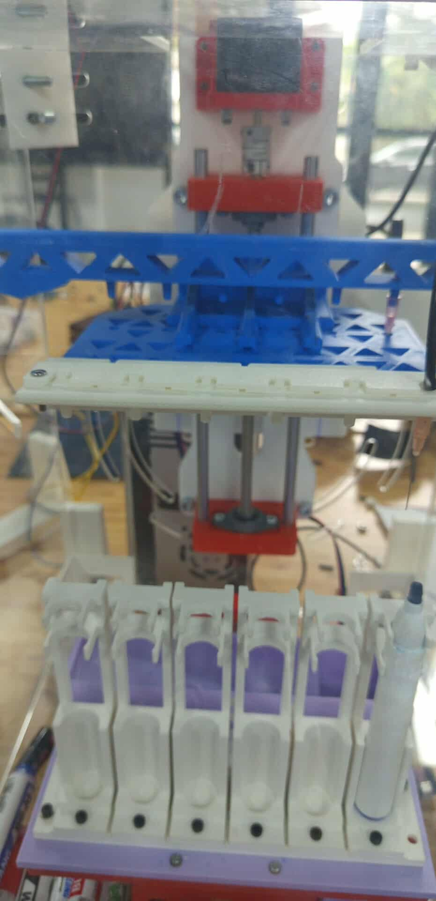
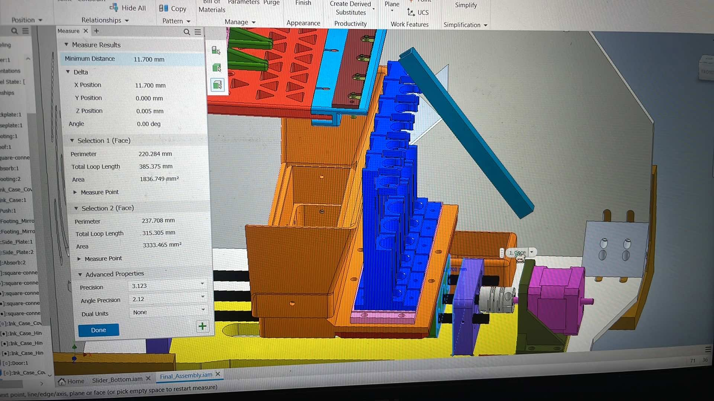
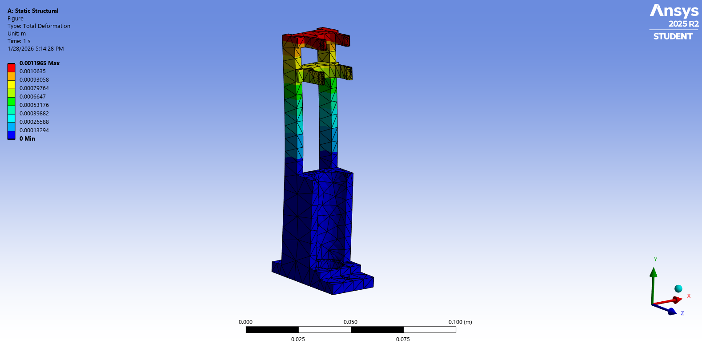
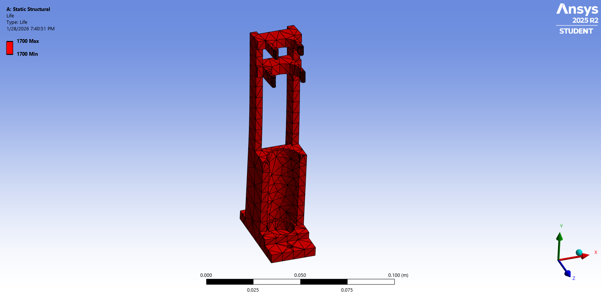
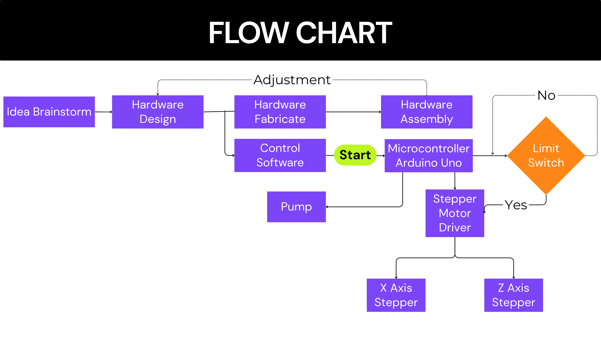

← Back to projects


Automated Whiteboard-Pen Refill Machine
A mechatronic machine developed to automate the cleaning and ink-refilling process for reusable whiteboard pens, reducing manual work and supporting more sustainable laboratory and classroom use.
Project Overview
The machine coordinates pen handling, positioning, ink delivery, and enclosure-mounted mechanisms in a repeatable sequence. The project combined mechanical design, fabrication, assembly, electronics, and system-level testing in a complete working prototype.
- Main planner and system designer.
- Mechanical fabrication, assembly, and integration.
- Automated operating sequence for pen handling and refill.
- CNC-cut acrylic enclosure and custom mechanical components.
- Full prototype testing and demonstration.
System and Development









